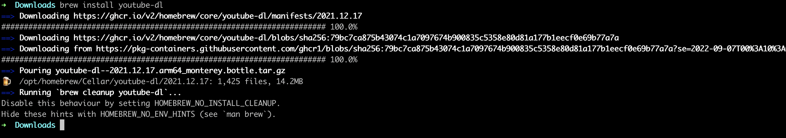
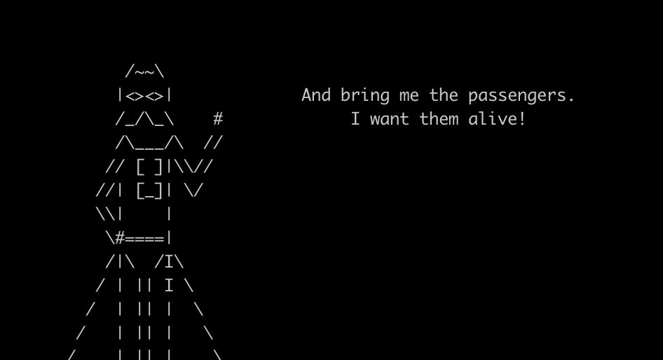
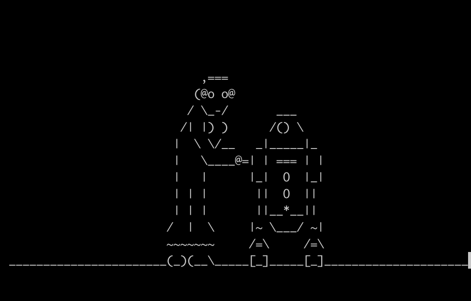

Remember the scenes in Hollywood movies where hackers sit in front of a computer and type something definitely not in English in a black window like this?
In this tutorial, we’re going to learn to set up the terminal, which is a black screen you can type stuff in (but you can set it to any other color you want). You’ll see that it won’t be anything like in those hacker movies, (and if you read more online you’ll see that those hacking scences ain’t anything like the real world hacks…) but it will still be very cool I promise.
Before we get into the terminal part, we’ll first go through some setup and get you download a few tools to your computer. This tutorial and the rest will be done with the assumption that you’re using a Mac. If you’ve not updated your mac to the latest OS, please do so. Remember to backup your data, always backup your data first!
Your Mac comes not with fries but a powerful tool called Spotlight. It’s that magnifier icon on the upper right:
Spotlight can index your whole computer. You’ll come across the term index more often when you learn about search. Think of it as a way to mark every stuff in your computer so it’s easier to find later.
Gone are the days you have to click on Launchpad and look around for an app. Now you just have to launch Spotlight/Alfred and type in the name of the app it’ll find it for you. The only thing you have to do is to set a shortcut for launching Alfred/Spotlight.
To find out/set the shortcut for launching spotlight, you go to System Preferences –> Keyboard –> Shortcuts –> Choose Spotlight on the left column.
You only need to check Show Spotlight search, then click
on the box on the right, enter your shortcut and Enter. I often use
command + space (command symbol = ugly 4-leaf clover), so
just like in the screenshot above.
Now just command + space, Spotlight should show up for
you. Then type on the name of whatever you want to find, it shall shown
you a bunch of results to choose from. For example here I’m looking for
VS Code:
Mac comes with a terminal app, but it’s not good enough. Please use iTerm2, download from here.
It should download a .zip file, just click on it to extract the app.
Drag & drop it to the Applications folder then you’re
good to go.
VSCode (Visual Studio Code) is a code editor, i.e. a text-editor but for code. Think of it like Microsoft Word but has all sort of fancy functions to support writing code.
Similar to iTerm2, just download it, click on the zip file to
extract, then drag & drop to Applications folder.
On the way to learn programming, you’ll have to use a lot of
supporting tools. Don’t have to think too much about it, just know that
you’ll need a lot of tools. Don’t need to know what they are, just know
you can install most of them through
Xcode Command-line Tools. To do this, open your iTerm2: -
command + space to launch Spotlight - type in
iTerm2 - Use up/down arrows to select iTerm2
and enter
In the iTerm2 window, type in xcode-select --install,
and Enter. You’ll see something like this:

Just click Install & wait until it looks like this:

In the next tutorial when we learn more about the terminal, we’ll see that there are a lot of cool programs we can run there. But just like life, computers and programs are ever changing. To control this, we often designate a version to a release of a software so we know which is which. This is very important. For example, you’re writing a program that depends on another program X. You test and know for sure your code works fine if X_version=1.0. But you’ll never know if X_version=1.1 will stay the same or not, so you should specifically mention in your code that it has to be X_version=1.0.
Anyway, this highlights a need to have some software to manager all versions of any program. Software like this is called package manager. A program is a package. A library (just think of it as a bunch of supporting code) is also a package. And a package manager knows all of them, past and future, one ring to rule them all.
For mac, the most popular package manager is called Homebrew. To install it, simply head to brew.sh, copy & paste the command there into your iTerm2 window and Enter.
You can find example screenshots of the installation on this website.
We’ll see how to use homebrew to install something later.
If you open your iTerm2 window right you, you can see that it’s kinda…boring. There’s a tool to make it more colorful, but more importantly, make it much easier to use through crazy tons of built-in functions. It’s called oh-my-zsh. We’ll talk about zsh later.
To install oh-my-zsh, simply run a command copied from https://ohmyz.sh/#install.
If it asks, just say Yes. We’ll see how much easier oh-my-zsh does to your life later.
Now you have a Terminal!!! Now, I promised something cool, so let’s try something cool!
Do you know you can download youtube videos from your computer, without using any website or sketchy software??? Lemme welcome you to youtube-dl!
Let’s install it with Homebrew, in an iTerm2 window, type in:
brew install youtube-dl
It should look like this: 
Let’s download this song to practice the living room routine. In your iTerm2 window, enter:
youtube-dl https://www.youtube.com/watch\?v\=zzRr55RGYc4
It’ll proceed to download and looks like this:

Btw, if you’re looking for the best video player for mac, try IINA.
Yeah, I’m not kidding. You can watch Star Wars from the Terminal!
First install telnet:
brew install telnet
After telnet is successfully installed, type in:
telnet towel.blinkenlights.nl
and Enter! Enjoy. Recommend with some popcorns.
 
You’ll learn how to print something on the terminal later. Now think about it, that scence in the Matrix is simply printing out letters/digits on the terminal continuously, right? Somebody already wrote it so we can simply test it out. The source is from here. In your iTerm2 window, copy and paste this then Enter:
LC_ALL=C tr -c "[:digit:]" " " < /dev/urandom | dd cbs=$COLUMNS conv=unblock | GREP_COLOR="1;32" grep --color "[^ ]"
It shall look like this:

Images are copied from the following sources: - https://blog-en.webroot.com/wp-content/uploads/2015/01/2vnrkw8.png - https://www.lifewire.com/thmb/RkZFhWRUpyb3OXD7COey8c_L_Wo=/650x0/filters:no_upscale():max_bytes(150000):strip_icc():format(webp)/001-use-spotlight-mac-4586951-4db79788ac374ef388688ceb701264c4.jpg - https://mac.install.guide/assets/images/ruby/install-Xcode-CLT.png - https://mac.install.guide/assets/images/ruby/install-Xcode-CLT-done.png